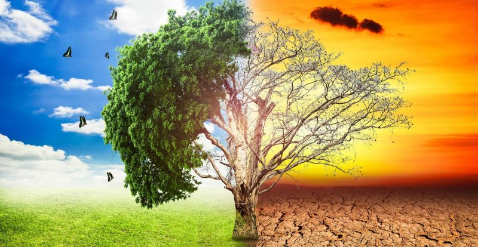

temperatura calida
La acumulación de gases contaminantes hace que las temperaturas aumenten cada vez más y que los climas cambien: esto provoca sequías y, además, aumenta el riesgo de incendios que conllevan la deforestación y la desertización del planeta. En 2012, los países del Sahel, en el norte de África, sufrieron una crisis alimentaria que afectó a unos 18 millones de personas debido a la escasez de lluvias. Los efectos de la sequía no son nuevos en esta zona, que viene sufriendo sequías recurrentes de forma periódica pero sí lo son la intensidad y la frecuencia de las mismas, que se han incrementado durante la última década como consecuencia del aumento de las temperaturas en el planeta. Tormentas más intensas El hecho de que las temperaturas sean más altas hace que las lluvias sean menos frecuentes, pero que sean más intensas; por tanto, el nivel de inundaciones y su gravedad también irán en aumento.
soluciones
Es ahora o nunca. Una investigación del Panel Intergubernamental sobre el Cambio Climático (IPCC) de la ONU muestra que el planeta podría cruzar el umbral crucial de 1,5 grados Celsius -por encima de los niveles preindustriales- en solo 12 años, lo que en su criterio, conllevaría a una "catástrofe global". Condiciones climáticas anómalas como sequías extremas, incendios forestales, inundaciones o escasez de alimentos para cientos de millones de personas podrían ser solo los primeros síntomas. Por qué 2030 es la fecha límite de la humanidad para evitar una catástrofe global El efecto dominó que puede convertir a la Tierra en un invernadero de forma irreversible Para evitar esa situación, de acuerdo con los especialistas, el mundo necesita "cambios rápidos, de gran alcance y sin precedentes en todos los aspectos de la sociedad". "Hay muchas acciones que solo implican un poco de sentido común", explica a la BBC Aromar Revi, coordinador y autor principal del informe. "Los ciudadanos y los consumidores están entre los actores más importantes para evitarlo", considera.